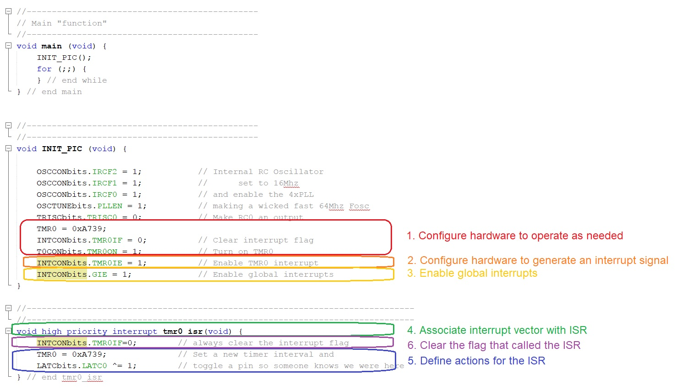
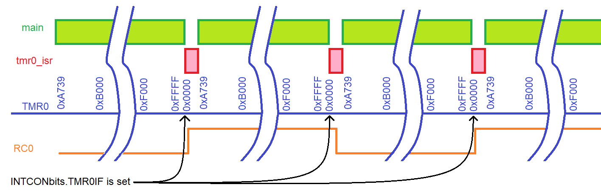

| Lecture: | 14 |
| Objective: | Understand the pieces of code that are required to construct an interrupt. |
| Code: | basicInterrupt.c |
Interrupts
In the coming discussion I will make references to hardware subsystems of the PIC. Hardware subsystems are computational units inside the PIC that are not directly related to the fetching and executing of instructions. Examples of hardware subsystems include timers and capture/compare/PWM modules. Each of these hardware subsystems has an interrupt flag. Our programs have polled the interrupt flag, waiting until the flag has been set (by the hardware subsystem) indicating that the subsystem has completed some important task. It is now time to start using the interrupt flags in a much more significant way, to give them the capability to call a special function.An interrupt service routine (ISR) is a function called by hardware. Almost all the hardware subsystems in the PIC have the ability to call an ISR. To do this the subsystem must be configured so that the subsystems interrupt flag becomes the signal to stop running main and start running the ISR. This is accomplished by setting the interrupt enable bit associated with the hardware subsystem. Since an ISR is called by hardware and not your program, your main program has no idea when the ISR will be called, and cannot pass parameters to the ISR. At first you may find the concept of interrupts complex and unintuitive, but they represent one of the most powerful capabilities of a microcontroller and your embedded systems toolbox.
Why should we bother with these odd functions? Having an ISR is like having a second program independent from main. These little programs can handle mundane tasks only when mundane tasks need worked on. This allows main to focus on the important command, control, and communications tasks. In fact there are many different hardware subsystems inside the PIC that can generate interrupts, take a look at page 107 of the PIC18(L)F2X/4XK22 Data Sheet found on the class main web page.
In order to use interrupts in your programs you will need the following 6 components somewhere in your program.
- Hardware
- Configure hardware to operate as needed
- Configure hardware to generate an interrupt signal
- Enable global interrupts
- Interrupt Service Routine
- Associate interrupt vector with ISR
- Define actions for the ISR
- Clear the flag that called the ISR
Example program design
In order to better understand how you can use interrupts to perform useful tasks, the example program generates a 50% duty cycle square wave with a frequency of 352 Hz. We will use timer 0 as the hardware source to keep track of time and generate the interrupt signal. Note that this program, basicInterrupt.c, is linked at the top of this web page. Please download and run it to verify what we are doing here.- Hardware
- Configure hardware to operate as needed. Set up timer 0 to run with a 1:1 prescaler (the default), and an initial value of 0xA739. We clear the interrupt flag for good measure in case it has already been set.
- Configure hardware to generate an interrupt signal. Looking at register definition for the INTCON register page 109 of the PIC18(L)F2X/4XK22 Data Sheet will show you that setting the TMR0IE bit will enable the timer 0 subsystem to generate an interrupt signl every time the TMR0IF flag is set (anytime that timer 0 rolls-over).
- Enable global interrupts. Setting the GIE bit-field of the INTCON register enable the interrupt feature of the PIC controller.
- Interrupt Service Routine
- Associate interrupt vector with ISR. This is done using the compiler-specific function call syntax shown in the example program. For the time being, all your interrupts will be high priority.
- Define actions for the ISR. Since we want to generate a square wave, we need to toggle the RC0 pin. The expression TMR0 = 0xA739; set timer 0 704 us before it will roll over. Since it is the timer 0 roll over that causes the tmr0_isr to be called, ensures that it is called at the proper frequency.
- Clear the flag that called the ISR. The ISR is called when the TMR0IF is equal to 1. If we did not clear TMR0IF then tmr0_isr would be called immediately after exiting. This would cause the RC0 pin to toggle at a much higher frequency than we want and it would also not allow main any allotment of CPU time. While in this program, main has nothing to do, most of the time, we will have main doing use things.

Let's take a minute to verify to check that the prescaler for timer 0 and the starting value for timer 0 are correct. This starting value needs to be for half the wave length of the 352 Hz wave because, as we will saw, the ISR toggles the pin that generates the waveform (2 toggles are required for a complete wave).
A 352 Hz waveform toggles once every 1.42ms. The smallest timer 0 prescaler that accommodates this duration is 1:1. Using a 1:1 prescaler, let's use units factoring to determine the number of timer counts that go by in ½ of a 352Hz wave.
16*10^6 clk 1 cnt roll over 1 pin toggle wave 352 waves ----------- * ----- * -------- * ------------ * ------------- = --------- 1 sec 1 clk x counts 1 roll over 2 pin toggles secSolving for x yields 22,727. We will be using the roll-over flag for timer 0 as the interrupt signal, so we need to determine the initial value for timer 0 so that it rolls over in 22,727 counts. Starting timer 0 at 216
Example program analysis
Let's take a moment and examine how the basicInterrupt program runs. To do this I like to ask myself the question, "Through time, what function is running?" The answer to this question is either main or the interrupt service routine; always one and never both. In the image below, time flows from the left to right and the we see the green bar indicating when main is in control of the CPU and red bar when the tmr0_isr is running. Below this a blue time line showing the timer 0 count value. Initially main (through the INIT_PIC function) initializes the timer to 0xA739. The timer slowly counts up, making its way to 0xFFFF and then rolls-over to 0x0000. The moment that the timer rolls over to 0x0000, the INTCONbits.TMR0IF flag is set, causing main to stop running and the tmr0_isr function to start running. Inside the tmr0_isr function, the timer is set to 0xA739, pin RC0 is toggled, and the INTCONbits.TMR0IF flag is cleared. The tmr0_isr function then exits and main resumes running. This corresponds to the red bar ending and the green bar starting. The process of timer 0 counting-up, rolling over, stopping main, running the tmr0_isr repeats indefinitely.
Subsystem interrupt interface
In order to enable the interrupt feature of the PIC, the hardware must be configured to generate the appropriate signal to the MCU. Each interrupt signal has three bits associated with it.- Flag - when set (to logic 1) causes the hardware to generate an interrupt signal
- Enable - when set enables interrupt signal to contact MCU
- Priority - sets the relative importance of the interrupt signal
ISR guidelines
- The code inside an ISR should be simple.
- Never put an infinite loop inside ISR - unless you never want to get back to main.
- I strongly discourage putting delay loops inside ISR.
- Never put a delay that waits for user input inside an ISR. For example, do not put the following in an ISR: while (BUTTON == 0); inside an ISR.
- All communication between the ISR and main requires the use of global variables.
- Use interrupts to build software interfaces to hardware. The ISR will typically move data to/from the hardware and global variables.
- An ISR can alert main that it has collected new data by means of a global variable acting as a flag.
- Avoid data processing inside ISR, instead have main do the heavy lifting and communicate to the ISR through flags and global variables.
- Sometimes an ISR will need to retain a value between
invocations. In cases like this you will need to use a static
variable. The following is a typical example of a static variable
declaration inside an ISR.
static int8 isrCounts = 0;
The term static means that the variable should retain between ISR invocations. The assignment to 0 only applies to the first call to the ISR, on every subsequent invocation of the ISR, this assignment is ignored and the value from the previous invocation used. - Up to two ISR's can be activated on the PIC at any given time.
- Avoid calling function from within an ISR. Absolutely never call a function from inside an ISR that is also called from within main. Absolute chaos is a best case scenario.
Advanced topics
Our PIC has 33 different interrupt sources. These interrupts are split into three categories, resets, core and peripheral. Reset interrupts correspond to events which should cause the MCU to restart. Core interrupts are configured using the INTCONx registers and generally correspond to legacy features (features found on older generation PIC processors). Peripheral interrupts are configured using the PIRx, PIEx and IPRx registers and correspond to more contemporary features of the 18F family of MCUs.While there are up to 33 distinct sources of interrupts, there are only three interrupt service routines, main, HIGH_ISR, and LOW_ISR as shown in the following figure. It may seem odd to call main an ISR, but its a subroutine that's executed in response to an interrupt event.

This figure shows the interrupt sources on the left and what action is taken when each occurs. When a reset event occurs, the MCU executes the "program" at address 0, which is most cases is a GOTO instruction pointing to main. When one of the other interrupts occurs, the MCU will execute either the program at address 0x08 or 0x18 depending on how the interrupt priority was configured.
Since their may be several different interrupt sources activating an ISR, the first thing that an ISR must do is to poll all the potential interrupt sources to determine which is responsible for activating it. The guts of the ISR should be simple and should be limited to moving the information collected by the hardware to internal storage for further processing by main. In some cases it may be appropriate to perform basic data processing on this data. In many cases, the ISR will alert main that it has collected new data by means of a flag. All communication between the ISR and main will require the use of global variables. The last thing that an ISR needs to do is to return from the interrupt using the RETFIE. This instruction is automatically included in your C code whenever you have an "interrupt" type function.
The Big Picture

- MCU powers up, jumps to RESET vector
- MCU starts execution of main
- Dynamic configuration
- configure hardware
- clear hardware interrupt flag
- enable hardware interrupt
- enables global interrupts
- Event occurs which sets interrupt flag
- MCU stops running main
- MCU saves W, STATUS, BSR, PC
- MCU disables global interrupts
- Executes "GOTO ISR" at interrupt vector address
- ISR: Poll interrupt flags
- ISR: Execute appropriate code in ISR
- ISR: Clears interrupt flag
- ISR: executes RETFIE
- global interrupts are enabled
- W, STATUS, BSR, and PC are restored
- MCU resumes running main
Test your understanding
You can find the solutions embedded in the "source code" for this web page by right mouse clicking on this web page and selecting "view source". The solutions are in HTML comments.- Adapt basicInterrupt.c to generate a 38kHz waveform with a 50% duty cycle.
- Adapt basicInterrupt.c to generate a 38kHz waveform with a 10% duty cycle.